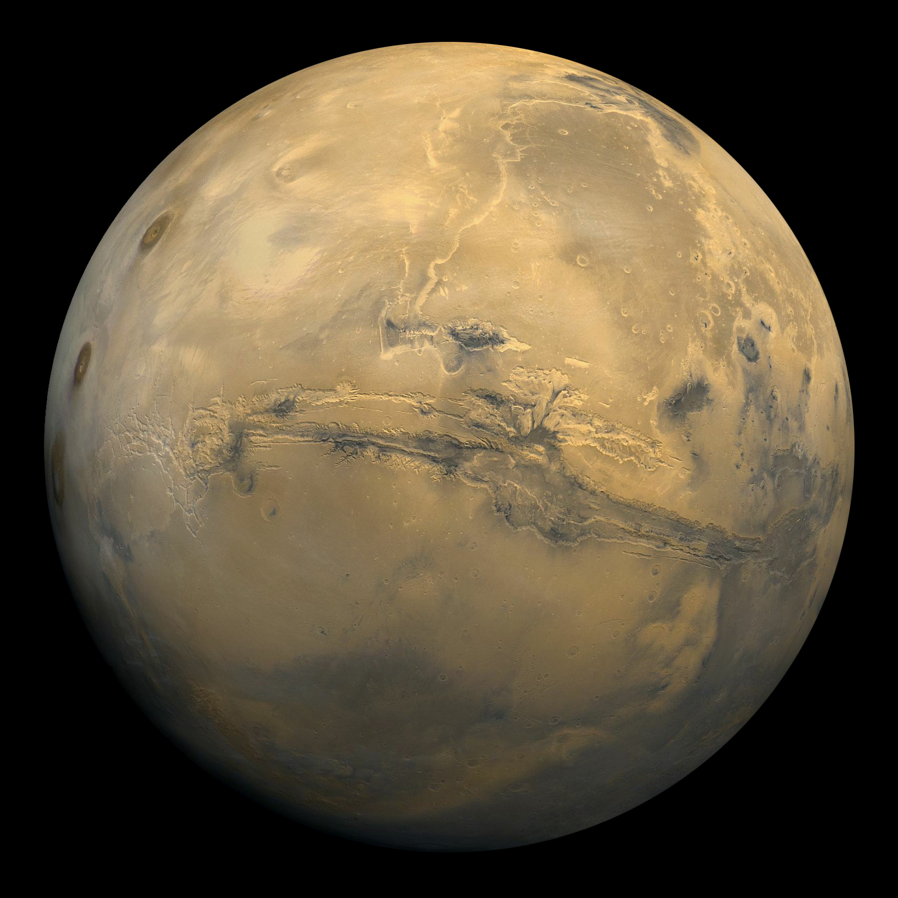

Mercure
Mercure est la première plantète du Système Solaire. Sa distance au Soleil varie entre 46 milions de kilomètres et 70 milions de kilomètres.
Mercure est aussi la plus petite planète du Système Solaire, avec seulement 4 874km de diamètre, soit un tiers de celui de la Terre. Dépourvue de bouclier protecteur (atmosphère ou champ magnétique), elle est exposée au flux de particulles solaire ; et le Soleil calcine sa surface. Cette dernière est ravagée par les cratères. Cependant, elle offre des ressamblances avec la Terre. En effet, c'est un planète qui s'est formée de la même manière que les quatre mondes gravitant près du Soleil (Mercure, Venus, la Terre et Mars), c'est à dire en rassemblant de la roche et du fer présant dans le disque protoplanétaire (le disque qui se forme avant les planètes auour d'une étoile).
Même si on a longtemps pensé que Mercure présentait toujours la même face au Soleil, on sait aujourd'hui que la planète tourne sur elle-même un fois tous les 59 jours pour 88 de rotation sur son orbite. Cette idée était donc érronée. A la surface de Mercure, la température peut varier 173°C à 427°C, selon que le point considéré est face ou dos au Soleil.
Mercure présente la particularité d'avoir un mouvement que la physique de Newton ne décrit pas parfaitement. Sa trajectoire change en effet continuellement d'orientation dans l'espace, traçant ainsi peu à peu une rosace.
Il a fallu attendre la théorie de la relativité d'Einstein pour expliquer cet étrange mouvement.
C'est la sonde Messenger, envoyée par la NASA, qui a permis d'observer précisément Mercure.
Vénus

Vénus est la deuxième plantète du Système Solaire. Sa distance au Soleil varie entre 107 et 109 kilomètres.
Vénus est un enfer. Son atmosephère est constituée de 96,4% de dioxyde de carbone, et de gigantesques nuages d'acide sulfurique planent au dessus de sa surface. Aucune sonde n'a réussi a demeurer plus de quelques heures. Pourtant Vénus présente pourtant une compostition semblable à la Terre. Mais la planète est plus proche du Soleil et son atmosphère crée un redoutable effet de serre ; sa température est donc beacoup plus élevée (plus de 400 °C), ce qui a conduit à la perte de presque toute son eau.
Vénus représente un avertissement pour ce qui pourrati arriver à notre planète si nous continuions à rejeter dans notre atmosphère tant de dioxyde de cabone.
Vénus est de loin la planète la plus facile à repérer dans le ciel nocturne. Seuls le Soleil et la Lune sont plus brillants. De là vient son surnom d'Etoile du berger.
Le transit de Vénus est un événement rare qui ne survient tous les 120 ans environ. Le phénomène se produit alors deux fois à huit ans d'intevalle. A ces occasions, on peut voir Vénus passer devant le Soleil sous la forme d'un petit point noir.
La Terre
La Terre est la troisième plantète du Système Solaire. C'est la seule qui abrite la vie dans le Système Solaire. Sa distance au Soleil varie entre 147 et 152 kilomètres.
La Terre est le seul monde connu avec de l'eau liquide en surface, le seul à être doté de plaques tectoniques et d'une couche d'ozone, le seul qui porte la vie. On pense que cela est lié à la distance de la Terre au Soleil, qui se trouve dans ce que l'on peut appeler la zone habitable de notre étoile.
La température à la surface de la Terre varie entre environ -60 °C et 50 °C, avec une moyenne de 18 °C. L'eau s'y trouve donc sous forme liquide. Son atmosphère est composée de 78,1% d'azote, de 21% de dioxygène et de quelques autres gaz. Enfin la Terre est protégée du vent solaire par son champ magnétique.
La Terre a une surface recouverte d'eau à plus de 70%. Cette eau est indispensable à la vie. Mais l'existence d'eau liquide est précaire : à plusieurs reprises, la planète a subi des glaciations. Il est très difficile de sortur d'une glaciation car la glace renvoie les rayons du Soleil, les empêchant de la faire fondre.

La Terre est aussi la première planète du Système Solaire a comporter un ou plusieurs satellites naturels. La Lune est de très loin le corps céleste le plus proche de la Terre. C'est le seul sur lequel l'homme ait marché (douze hommes, entre 1969 et 1972 ; un treizième y repose).
La Lune est responsable des marée sur la Terre. C'est Newton qui a le premier expliqué ce phénomène : la gravité du corps s'exerce sur l'eau et la soulève, deux fois par jour. Mais les mers et les océans ne sont pas seuls à être soumis au marées : toute la Terre se déforme, même si les roches subissent une déformation plus faible que l'eau.
La Lune s'éloigne de la Terre de 3,8 centimètres par ans. On peut mesurer ce déplacement avec précisions grâce aux réflecteurs lunaires (coins de cubes), des dispositifs installés sur la Lune qui renvoient la lumière : on envoie dessus un faisceau laser, et on regarde après combien de temps il revient sur la Terre pour connaître la distance qui nous sépare de notre satellite.
Mars

Mars est la quatrième plantète du Système Solaire, et la dernière des planètes telluriques. Sa distance au Soleil varie entre 206 et 249 kilomètres.
Mars possède une très fine atmosphère, qui est en permanence traversée par les particules du Soleil. La température ne dépasse presque jamais les 0 °C. Pourtant ce n'est pas une planète morte, et sa surface abrite de l'eau à l'état solide, aux pôles. Elle a peut-être un jour eu des fleuves, des océans. Il est possible qu'une forme de vie (micro-organismes simples) ait existé sur la planète grâce à son eau. L'atmosphère de Mars est composée de 95,3% de dioxyde de carbone, et il s'y trouve des nuages ; souvent ont lieu des tempêtes de poussière.
Mais Mars n'a jamais abrité de civilisation extraterrestre, bien qu'on l'ai longtemps pensé. Quand les premières sondes sont passées à côté de Mars (en 1969), elle révélèrent un pyasage de désolation. Mars n'a pas un relief plat. Au contraire c'est la planète avec la montagne la plus haute du Système Solaire. (Voir ici, relief augmenté 20 fois) C'est en fait un volcan (le mont Olympe) de 27 kilomètres de haut (contre moins de 9 km pour l'Evrest !).
Au debut de son existence, Mars possédait une épaisse atmosphère alimentée par ses volcans. Pourquoi l'a-t-elle perdue ? Il est possible qu'elle ait fui dans l'espace parce que la pesanteur de la planète n'était pas assez forte, ou qu'une collision l'ait dispersée. Après avoir perdu son atmosphère, l'eau s'est évaporée ou infiltrée dans les roches poreuses. On ne sait pas où est l'eau sur Mars, mais il est possible que de la glace se trouve à 400 kilomètres sous la surface au niveau de l'équateur.
Près de 50 sondes spatiales ont été envoyées sur Mars. C'est la planète sur laquelle ont atterri le plus de sondes.
Mars possède deux satellites naturels : Phobos et Déimos. Phobos est le plus gros. Déimos possède une propriété interessante : elle est toute petite et sa gravité est tellement faible que l'on pourrait sauter extremement haut ; une personne en bonne santé peut même sauter assez vite pour se mettre en orbite.